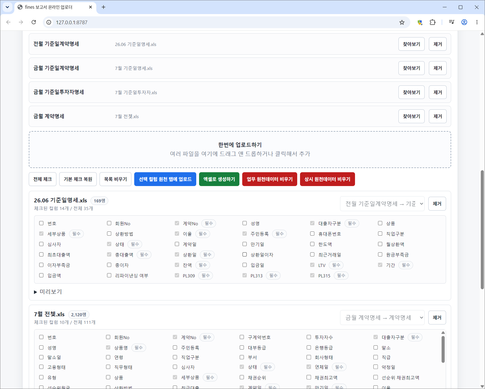
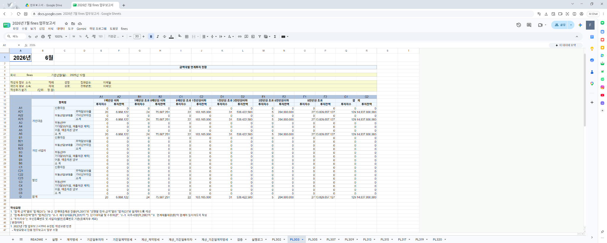
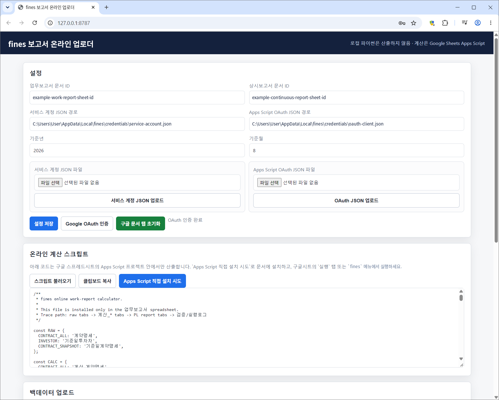
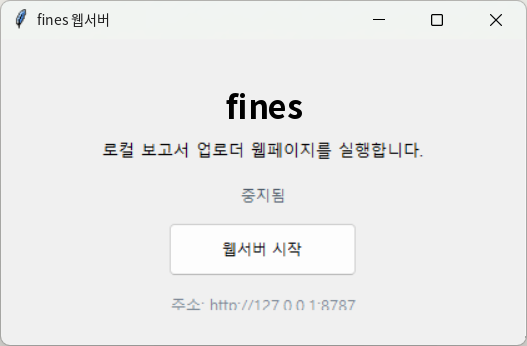

DOCUMENT & FILE AUTOMATION / FINES
fines금감원 보고서 작성 도구
DB에서 내려받은 엑셀을 Google Sheets에 올려
업무보고서와 상시감시보고서를 계산합니다.
실무 성과
보고서 작성 3시간 → 5분
계약·투자자 자료의 분류와 집계를 자동화해 보고서 작성 시간을 줄였습니다. 결과를 자료 건수·잔액 검증표와 함께 확인합니다.
반복하던 자료 분류와 집계를 자동화했습니다.
보고서마다 필요한 자료 연결
금감원 보고서를 작성하려면 계약과 투자자 자료를 연결하고, 투자자·상품 유형과 금액대에 따라 나눠 집계해야 했습니다. 이 과정을 반복하는 시간을 줄이려고 보고 항목별 계산과 검증 절차를 프로그램으로 옮겼습니다.
업로드부터 검증표까지
실무에서는 DB에서 내려받은 파일의 필수 열과 기준월을 확인한 뒤 Google Sheets에 올립니다. 사용자가 재계산을 실행하면 Apps Script가 보고서와 검증표를 함께 갱신해 결과와 계산 근거를 확인할 수 있습니다.
엑셀 파일로 보고서를 만드는 순서
계약·투자자 자료를 보고 항목에 맞춰 집계합니다. 파일을 올린 뒤 사용자가 시트에서 재계산을 실행하는 방식입니다.
엑셀 파일 선택
DB에서 내려받은 계약·투자자 파일을 고릅니다.
자료 확인
필수 열이 있는지, 같은 월의 파일이 겹치는지 확인합니다.
Sheets 업로드
필요한 열을 보고서별 자료 탭에 올립니다.
재계산 실행
Google Sheets에서 보고서 재계산을 누릅니다.
결과 확인
Apps Script가 보고서와 검증표를 갱신하고 실행 기록을 남깁니다.
필요한 열을 골라 올립니다.
파일 종류와 열 제목을 읽어 필요한 열을 고릅니다. 기준월과 필수 열을 확인한 뒤 Google Sheets로 보냅니다.

계산 결과를 검증표와 함께 확인합니다.
계약번호로 자료를 연결하고 투자자와 상품을 분류해 보고 항목별로 합산합니다. 계산에 쓴 자료의 행 수와 잔액 합계는 검증표에 기록합니다.
화면의 등록번호는 지웠고, 회사명과 개인·문서 식별정보는 예시로 바꿨습니다.



자료, 중간 계산, 보고서를 각각 다른 탭에 두어 계산 근거를 확인할 수 있습니다. 실행 기록에는 계산 시작·종료 시각, 기준월, 자료 건수를 남깁니다.
보고서 문서에 계산 코드를 설치합니다.
Sheets는 서비스 계정으로 연결합니다. Google OAuth 인증을 마치면 Apps Script API를 통해 두 보고서 문서에 계산 코드를 각각 설치합니다.

내 PC와 Google Sheets에서 나눠 실행합니다.
Windows 런처에서 로컬 서버를 켜면 입력 화면이 열립니다. Python이 엑셀 파일을 읽고, Apps Script가 Google Sheets에서 보고서를 계산합니다.
- 개발 언어
- Python · JavaScript
- 프레임워크·GUI
- Flask · Tkinter
- 파일 라이브러리
- pandas · openpyxl · xlrd
- 입력·결과
- 엑셀 파일을 읽어 Google Sheets에 보고서와 검증표를 만듭니다.
- 외부 API
- Google Sheets API · Apps Script API
- 인증
- 서비스 계정 · Google OAuth 2.0
- 실행 환경
- Windows 로컬 서버 · Google Apps Script
- 빌드·배포
- PyInstaller · Windows 실행파일

